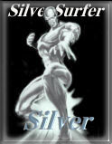
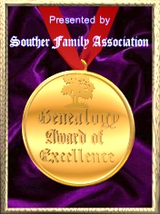

Here is the fifth page of awards The Rudge Family Page has received in chronological order. Thanks to all for visiting and nominating this site! Most have links- click on the award to visit these great sites.

-awarded 1 Sep 1998
-awarded 3 Sep 1998
-awarded 4 Sep 1998
 -became a member 4 Sep 1998
-became a member 4 Sep 1998

Presented to
The RUDGE Family Page
4 September 1998
SFA#008
Award Pages 1 2 3 4 5 6 7 8 9
 Back to The Rudge Family Page
Back to The Rudge Family Page
Site Map
Last updated on 23 May 1999